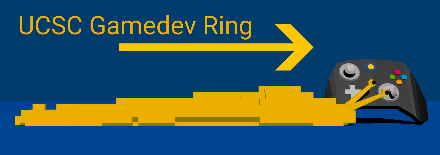
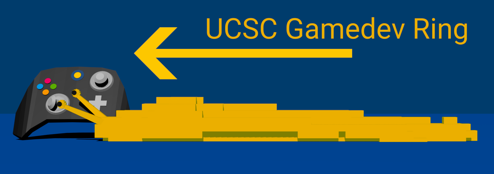
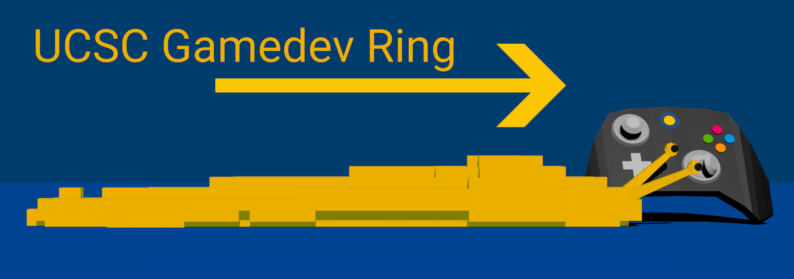
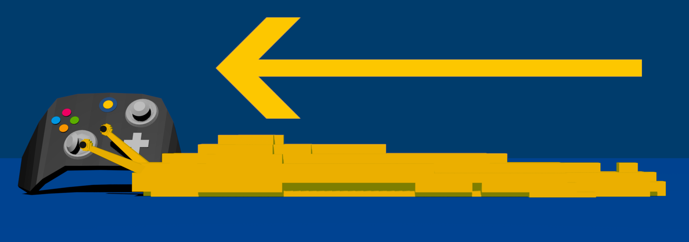
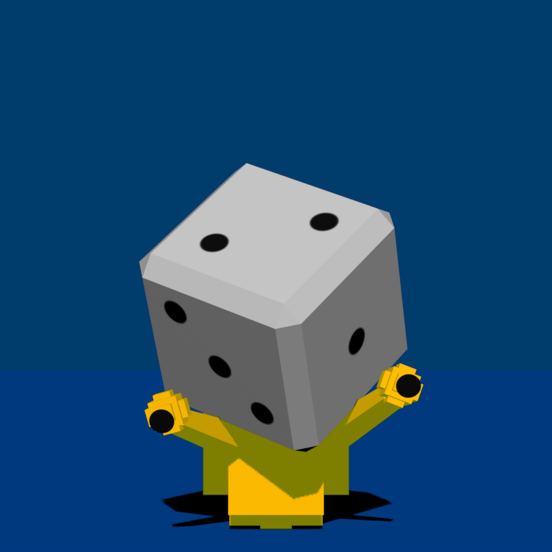
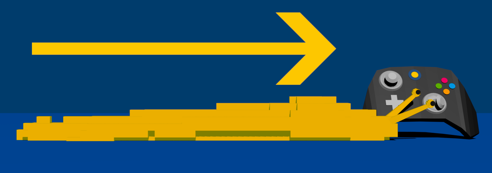
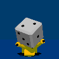

If you meet the criteria and want to be added to the ring, email me: ambiguousname (at) ambiguous (dot) name
View the list of members.
Criteria is subject to change.
Use these buttons:

HTML Source:
<a href="https://ring.ambiguous.name/left"><img src="https://ring.ambiguous.name/slug_backward_med_res.png" alt="Previous"/></a>
<a href="https://ring.ambiguous.name/random"><img src="https://ring.ambiguous.name/slug_random_med_res.png" alt="Random"/></a>
<a href="https://ring.ambiguous.name/right"><img src="https://ring.ambiguous.name/slug_forward_med_res.png" alt="Next"/></a>
Feel free to use any of these button variants (most are in 88 x 31 resolution):






Created and maintained by ambiguousname
View the source code online, under MIT License
The server theoretically supports an HTTPS/TLS handshake for direct publishing (based on hyper-rustls' sample server), but the server itself just currently runs as HTTP on my Raspberry Pi through a Cloudflared tunnel. That also means I don't have to implement the hard stuff like caching.
Some implementation details were inspired by Mudring by liampas.
The links rely on the referer header from your browser, so rel="noreferrer" should be disabled for these links. If you want to sidestep this issue, you can use a query string:
https://ring.ambiguous.name/left?member=mywebsite.com
?member=somesite.com indicates which site you're linking from, and so the server will use that instead of the Referer header.